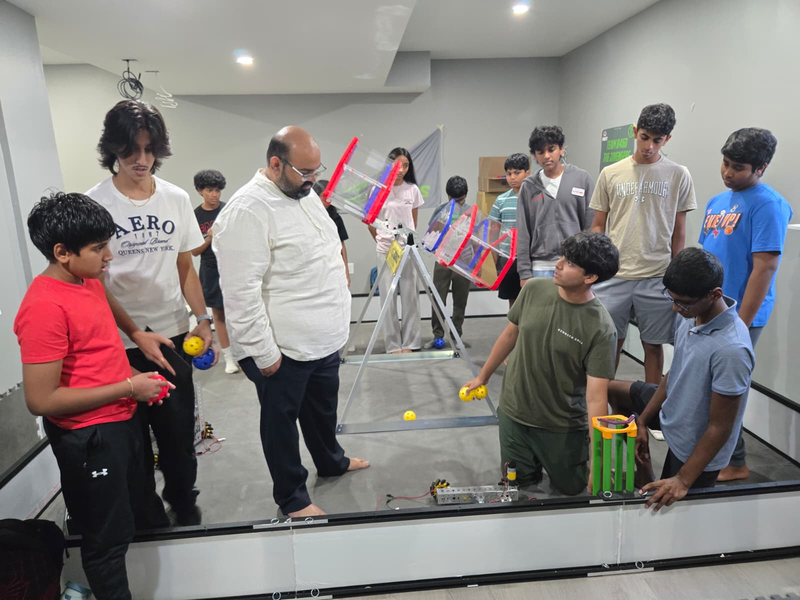

FIRST Robotics & Science Olympiad
Millimeter-accurate Java autonomous pathing, electromechanical CAD assembly, and competitive Science Olympiad hardware.

FTC 8468 The Javengers: Build & Programming Lead
I serve as Build & Programming Lead for FTC 8468 The Javengers (following three competitive seasons with FTC 14464 BotBusters). I write millimeter-accurate Java autonomous navigation systems using RoadRunner, PedroPathing, and OpenCV computer vision, while designing multi-stage intake, lift, and scoring mechanisms in OnShape and Autodesk Fusion 360.
Across my FIRST Robotics career, our team has qualified for 3 Pennsylvania State Championship Finals and earned 12 competitive awards (Control, Inspire, Motivate, Connect, and Think). I also organize and coach summer robotics camps for over 40 local students in Mechanicsburg.

30+ Invitational Medals & Top-20 National Team Finishes
As a varsity competitor and lead robotics developer for Cumberland Valley High School's Science Olympiad team, I helped lead our 20+ member roster to consecutive Top-20 National tournament finishes and earned more than 30 build and laboratory medals across national invitationals. Below are the four primary hardware systems I designed and calibrated:
Inspect Robot Tour GitHub RepositoryHovercraft
Designed a lightweight, thrust-controlled air-cushion vehicle with balanced lift-to-weight ratios and propulsion vectoring for high-speed stability down the track.
Electric Vehicle
Built and calibrated a battery-powered chassis with custom gear ratios, encoder feedback, and an electrical braking system to stop on exact target distances.
Robot Tour
Programmed an autonomous, sensor-guided mobile robot to navigate complex obstacle grids and compute exact path vectors within strict target times.
Helicopter
Constructed ultra-low-mass rubber-powered endurance aircraft featuring high-aspect-ratio rotors and tuned torque curves to maximize aloft time.